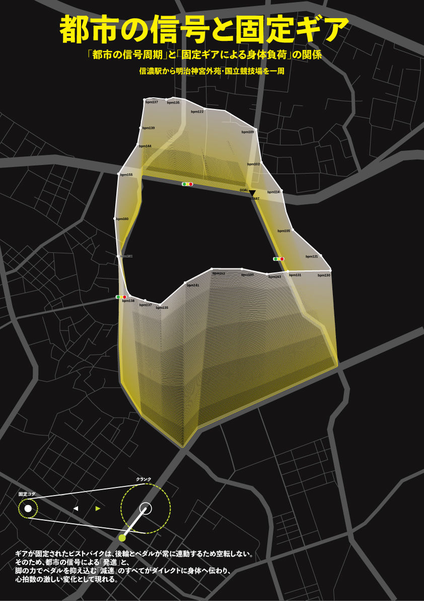

「都市の信号周期」と「固定ギアによる身体負荷」の関係
Concept
ギアが固定されたピストバイクは、後輪とペダルが常に連動しているため空転しない。普通の自転車のように足を止めて惰性で進むことができず、信号待ちでも足をつかずに「スタンディング」でバランスを取り続ける。つまり、ピストに乗っている間、身体は休むことがない。本作では、都市の信号による「発進」と、脚の力でペダルを抑え込む「減速」が、どのように身体の負荷として現れるのかに着目し、心拍数の変化を地図上に可視化した。

信濃町駅から明治神宮外苑・国立競技場を一周する、走りやすいルートを選び、実際にピストバイクで走った。Apple Watchを着けた状態で、Nikeの計測アプリとスピードメーターを使い、心拍数と信号の位置を記録した。
表現では、心拍数と地図上の位置が一目で一致して分かるように、心拍数をルートに沿った線の高さとして重ねた。色は暗い背景との明度差がはっきり出る黄色を選び、ダイアグラムとしての読みやすさを優先した。